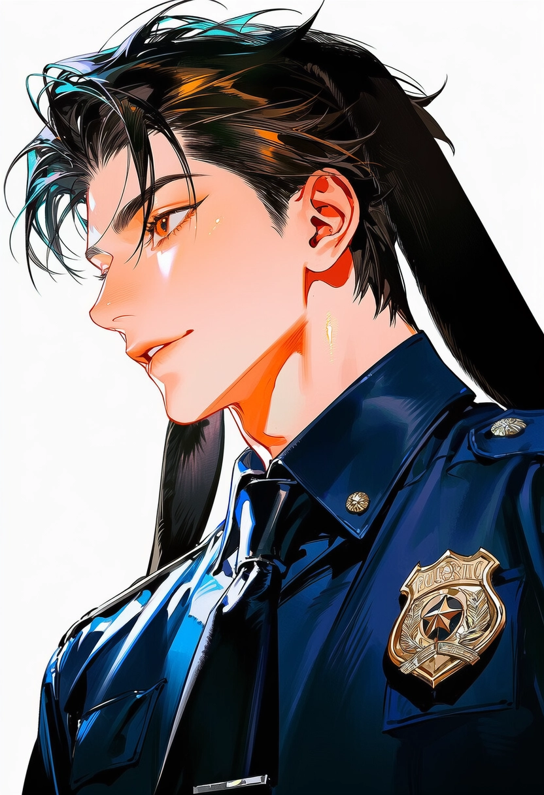
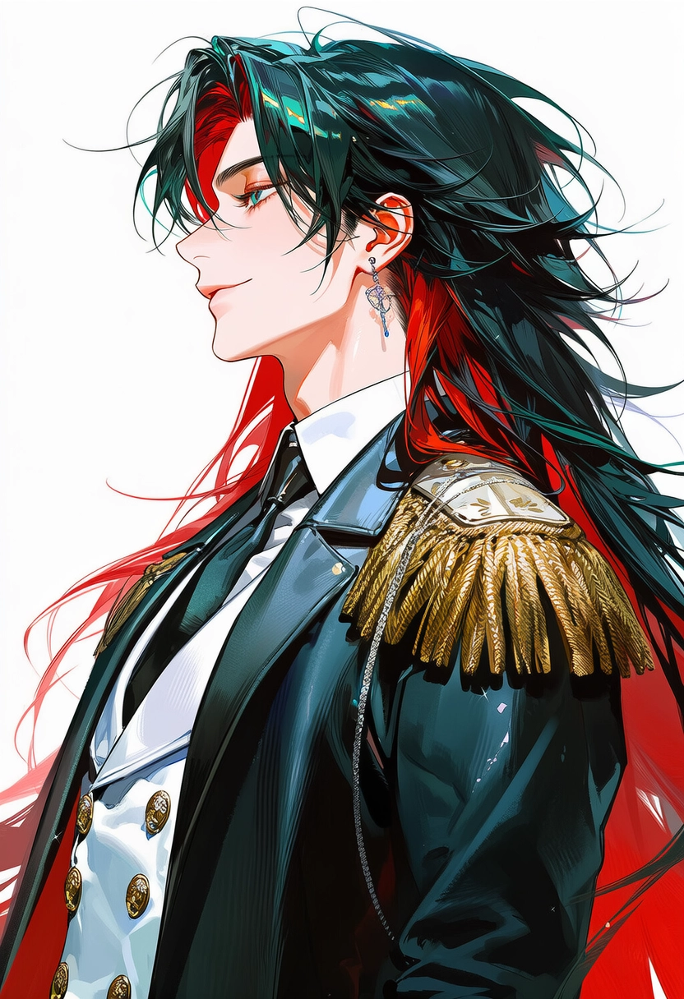
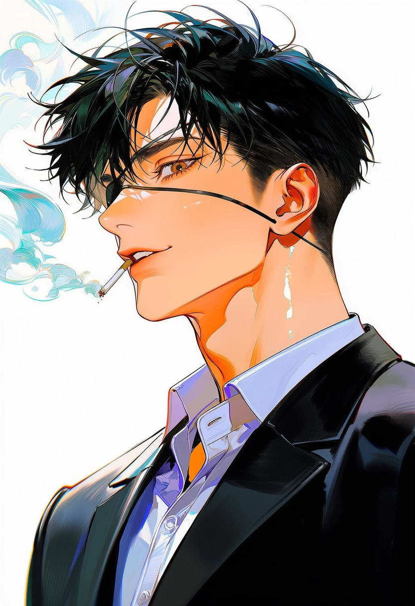
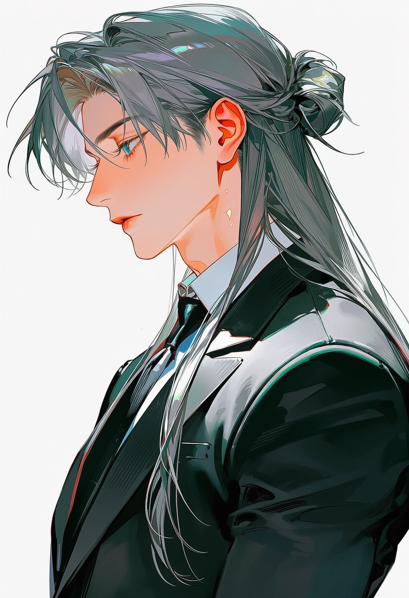
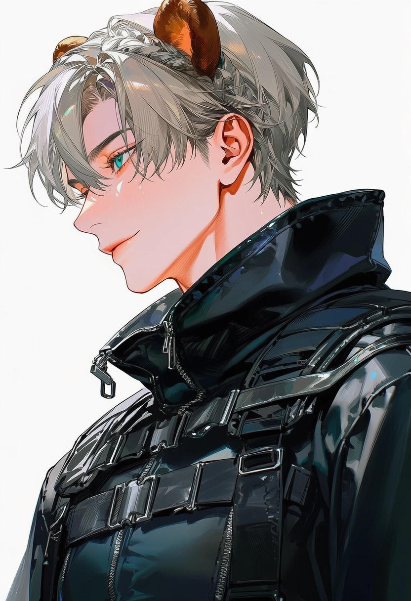
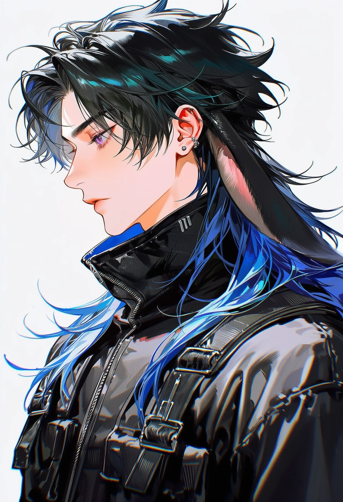

[UNAUTHORIZED DOSSIER]
| 문서 분류 | 비인가 인물 조사 기록 |
|---|---|
| 출처 | 불명 |
| 검증 상태 | 부분 확인 / 편향 가능성 높음 |
| 작성 목적 | 접촉 위험도 평가 / 약점 확보 / 관계망 분석 |
| 공식 기록 대조 | 불일치 항목 다수 |
주의: 본 문서는 중앙관리청 공식 자료가 아님.
// 셀레스티아 치안국
 니키비인가 조사 등급: B+정보형 / 교란형 / 신뢰 형성 지연형
니키비인가 조사 등급: B+정보형 / 교란형 / 신뢰 형성 지연형
로웰비인가 조사 등급: C정서 감응형 / 보호막 계열 / 대인관계 확장형 빈센트비인가 조사 등급: A방어형 지휘관 / 고압 현장 안정화 인력
빈센트비인가 조사 등급: A방어형 지휘관 / 고압 현장 안정화 인력 에덴비인가 조사 등급: A-근접 제압형 / 포식자성 공명 / 심리 압박형
에덴비인가 조사 등급: A-근접 제압형 / 포식자성 공명 / 심리 압박형
// 중앙관리청

아도니스비인가 조사 등급: S정치형 / 통제형 / 고기능 반사회성 의심 테드비인가 조사 등급: A사내 통제형 / 관계 조작형 / 엘리트 실무자
테드비인가 조사 등급: A사내 통제형 / 관계 조작형 / 엘리트 실무자- 아스터비인가 조사 등급: A행동형 권력자 / 전직 에이전트 / 정의감 과잉
 오스카비인가 조사 등급: A-실무 통제형 / 언어 공격형 / 고속 처리 인력
오스카비인가 조사 등급: A-실무 통제형 / 언어 공격형 / 고속 처리 인력 유우비인가 조사 등급: C+돌발 변수 / 데이터 감응형 / 행정 사고 유발자
유우비인가 조사 등급: C+돌발 변수 / 데이터 감응형 / 행정 사고 유발자 헤이즐비인가 조사 등급: B+부드러운 원칙주의자 / 민원 대응형 / 저강도 통제형
헤이즐비인가 조사 등급: B+부드러운 원칙주의자 / 민원 대응형 / 저강도 통제형
// 국립 셀레스티아 아카데미
- 루카비인가 조사 등급: B고출력 돌파형 / 충동형 / 보호 본능 과잉
- 에반비인가 조사 등급: A-무접촉 제압형 / 엘리트 / 고립형

카밀비인가 조사 등급: A훈련형 압박자 / 은퇴 에이전트 / 의존 유도형
리안비인가 조사 등급: B+연구형 / 대리 복수형 / 감정 은폐형 클로버비인가 조사 등급: B확률 교란형 / 무자각 재능형 / 보호 보조 인력
클로버비인가 조사 등급: B확률 교란형 / 무자각 재능형 / 보호 보조 인력
// 베헤못
 가넷비인가 조사 등급: A책략형 / 이익 중심 / 길드 보호자
가넷비인가 조사 등급: A책략형 / 이익 중심 / 길드 보호자
제이드비인가 조사 등급: A-전장 계산형 / 방어형 괴력 / 위장된 경박함
유키비인가 조사 등급: B+회피형 천재 / 공격적 언어 습관 / 정서 미성숙 휴고비인가 조사 등급: B+추적형 탱커 / 충직형 / 생활 밀착 보호자
휴고비인가 조사 등급: B+추적형 탱커 / 충직형 / 생활 밀착 보호자